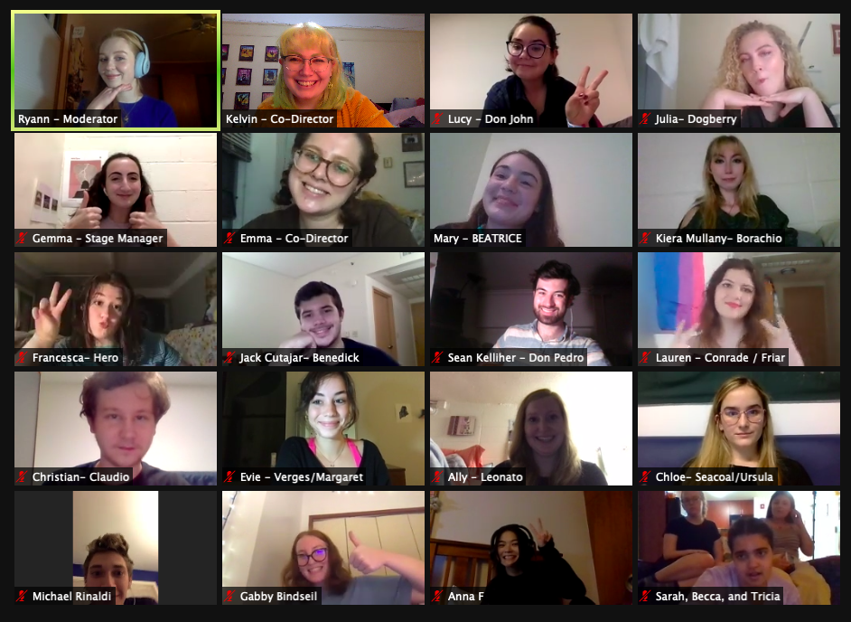

Try your hand at some
Shakespeare Trivia!

Part of TOP's mission is to make classical theatre accessible to everyone, so before each show, we hold an Outreach.
We discussed what the process of putting on a show during a pandemic is like, looked at how we edited the script to work for a modern audience, and played a Shakespeare Kahoot!